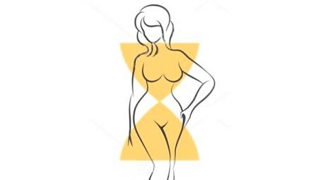
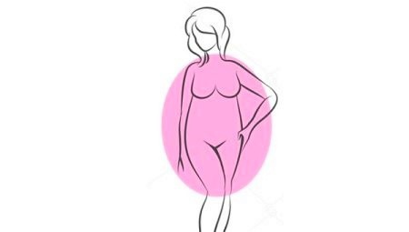
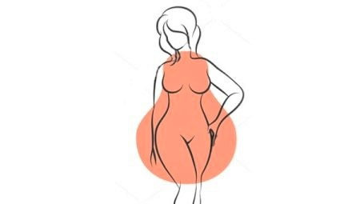
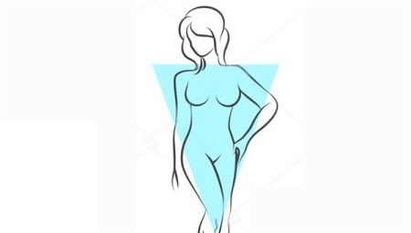

КАК ХУДЕТЬ ДЕВУШКАМ С РАЗНЫМИ ТИПАМИ ФИГУР
Сегодня каждая девушка вольна сама выбирать, какой она хочет быть: совсем худенькой или, что называется, с формами, иметь кубики на прессе или – прорисованные мышцы ног. В одном мы сходимся: хочется, чтобы тело было здоровым. Этому способствуют регулярные физические нагрузки и сбалансированное питание. В этой публикации мы поговорим о том, как с помощью спорта можно добиться желаемых результатов в зависимости от вашего типа фигуры, а также поделимся эффективными упражнениях на разные группы мышц.
Тип фигуры обусловлен генетической предрасположенностью: яблоко, груша, перевернутый прямоугольник или песочные часы. Как правило, девушки стремятся приблизиться именно к последнему типу – его принято считать самым женственным: узкая талия, одинаковое расстояние между плечами и бедрами делают фигуру невероятно привлекательной. Однако, сегодняшние реалии стирают эти границы, и каждая фигура считается уникальной и красивой. И мы несомненно рады этой тенденции!
ПЕСОЧНЫЕ ЧАСЫ
Если девушки, у которых ширина бедер и ширина плеч одинаковы, а талия ярко выражена, набирают вес, то он, как правило, распределяется по всему телу равномерно. Мы рекомендуем девушкам включить в программу тренировок силовые упражнения на ягодицы и ноги, которые сделают эти зоны подтянутыми, а также уделять должное внимание тренировкам на верхнюю часть тела, чтобы все выглядело пропорционально.
Идеально будет совмещать кардионагрузки с силовыми тренировками. Во многих источниках девушкам рекомендуеся придерживаться следующего графика: три силовых тренировки в неделю. Дело в том, что рост мышц происходит уже после тренировки, на этапе восстановления, поэтому пренебрегать перерывами между занятиями не стоит. В противном случае, вы можете добиться эффекта так называемой перетренированности, искусственно спровоцировать срывы, а желаемый результат заставит себя долго ждать.
К силовым можно добавить 1-2 кардиотренировки в неделю: например, бег или бассейн. Это, кстати, поможет облегчить и болевые ощущения в мышечной ткани после силовой нагрузки. Важно не забывать о разминке и растяжке: разогрев мышц перед тренировкой снизит риск получения травм, а завершение тренировки упражнениями на растяжку сделает тело более гибким.
Эффективные упражнения для девушек с фигурой “песочные часы” на разные группы мышц:
- приседания в смите
- жим платформы;
- отжимания от пола с колен
- тяга к груди вертикального блока;
- сгибания рук на бицепс с бодибаром
- отжимания от скамьи сзади
- жим гантелей над головой
ЯБЛОКО
Ширина плеч обладательниц этого типа фигуры как и у “песочных часов” равна ширине бедер, однако талия у “яблок” не так ярко выражена. Чтобы визуально сузить талию мы советуем увеличить количество силовых тренировок на низ и верх тела соответственно – чтобы за счет несколько увеличенной ширины грудной клетки и бедер талия визуально казалась тоньше. Как правило, лишний вес у девушек с таким типом фигуры оседает в верхней части тела: на груди, руках, спине.
“Яблокам” показаны аэробные нагрузки, которые позволяют уменьшить массу тела. Это может быть любой полюбившийся вам в спортивном зале тренажер: эллипс, степпер, велотренажер или беговая дорожка – главное заниматься с правильным пульсом не менее 30 минут за один раз, поскольку процессы жиросжигания в организме запускаются именно после прошествия получаса. Если вам больше нравятся групповые занятия, попробуйте, например, пилатес или йогу.
Важно также следить за питанием: считать калорийность продуктов, которые присутствуют в вашем ежедневном рационе, и стремиться к тому, чтобы питаться только полезными продуктами и на дефиците калорий (если мы говорим о снижении веса): то есть потреблять меньше, чем вы сжигаете. В проекте MyMission вам будет определена норма калорий исходя из ваших параметров и целей, а также вам будет представлено готовое меню на месяц. Мы стремимся к тому, чтобы снять с наших подопечных дополнительную нагрузку: вам не придется ломать голову, как питаться на необходимое количество калорий и при этом не чувствовать голода к концу дня. Мы подробно составляем рецепты блюд с указанием граммовки продуктов питания. Также в нашей базе знаний собрано множество дополнительных рецептов, которые еще больше разнообразят ваш рацион.
Вот несколько полезных упражнений на группу мышц в проблемных зонах девушек с типом фигуры “яблоко”:
- жим штанги на наклонной скамье
- берпи
- жим гантелей на горизонтальной скамье
- отжимания от пола с колен
- сгибания рук с бодибардом
- сгибания рук с гантелями наружным хватом
- прямые скручивания
- диагональные скручивания
- обратные скручивания
ГРУША
У девушек с таким телосложением объем бедер визуально гораздо больше объема груди. Поэтому им стоит больше внимания уделять бедрам и ногам, которые от природы могут выглядеть крупнее, чем верхняя часть туловища. Кроме того, если давать больше нагрузки на плечи и грудь, то визуально линии плеч и бедер можно сравнять – а с талией у “груш” сложностей не возникает.
Важно не допускать ошибок в начале тренировочного курса: не давайте сразу большую нагрузку на ноги. Помните, нельзя похудеть локально! Обилие силовых упражнений на ноги не даст желаемого результата. Напротив, следует подобрать в свою программу тренировок больше упражнений на верх туловища, которые позволят вам создать безупречно рельефные руки, спину и плечи, а ноги тренировать для поддержания общего тонуса мышц. Таким образом, визуально вы сравняете в объеме верхнюю и нижнюю части тела.
Кроме того, по крайней мере половина тренировок должна включать интенсивные кардионагрузки в 30-50 минут – в зависимости от степени вашей подготовки. Это необходимо для того, чтобы избавиться от лишнего веса, то есть избыточного количества подкожного жира в организме. Выберите то, что вам больше по душе: например, бег, ходьбу на дорожке под наклоном, аэробику или велотренажер.
Самые эффективные упражнения на ягодицы и ноги:
- приседания со штангой на плечах
- жим платформы
- мостик (подъем таза)
- зашагивания на степ-платформе
- разгибание бедра в тренажере
- отведение ног в тренажере
ПЕРЕВЕРНУТЫЙ ТРЕУГОЛЬНИК
У девушек с таким телосложением объем бедер визуально гораздо больше объема груди. Поэтому им стоит больше внимания уделять бедрам и ногам, которые от природы могут выглядеть крупнее, чем верхняя часть туловища. Кроме того, если давать больше нагрузки на плечи и грудь, то визуально линии плеч и бедер можно сравнять – а с талией у “груш” сложностей не возникает.
Важно не допускать ошибок в начале тренировочного курса: не давайте сразу большую нагрузку на ноги. Помните, нельзя похудеть локально! Обилие силовых упражнений на ноги не даст желаемого результата. Напротив, следует подобрать в свою программу тренировок больше упражнений на верх туловища, которые позволят вам создать безупречно рельефные руки, спину и плечи, а ноги тренировать для поддержания общего тонуса мышц. Таким образом, визуально вы сравняете в объеме верхнюю и нижнюю части тела.
Кроме того, по крайней мере половина тренировок должна включать интенсивные кардионагрузки в 30-50 минут – в зависимости от степени вашей подготовки. Это необходимо для того, чтобы избавиться от лишнего веса, то есть избыточного количества подкожного жира в организме. Выберите то, что вам больше по душе: например, бег, ходьбу на дорожке под наклоном, аэробику или велотренажер.
Самые эффективные упражнения на ягодицы и ноги:
- приседания со штангой на плечах
- жим платформы
- мостик (подъем таза)
- зашагивания на степ-платформе
- разгибание бедра в тренажере
- отведение ног в тренажере
ОБЩИЕ РЕКОМЕНДАЦИИ
Помните о том, что нельзя избавиться от жира локально: похудеть в животе или сузить таким образом талию. Зато можно снизить процент жира во всем организме, а уже потом проработать конкретные группы мышц для того, чтобы добиться желаемого результата.
Важно регулярно заниматься физическими нагрузками и правильно питаться. Это не значит, что нужно мучить себя диетами или жестко ограничивать потребление любимых продуктов. Достаточно составить сбалансированный рацион питания, чтобы ваш организм получал достаточное количество витаминов и минералов, есть небольшими порциями через каждые 2-3 часа, пить больше воды, выработать полезные привычки и высыпаться. И вы сами заметите, как преобразитесь буквально на глазах.